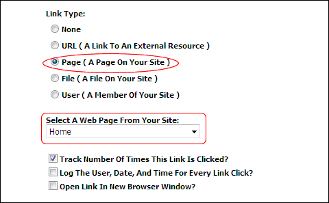

How to set a link to an existing page on the site using the Link Control.

Tip: Pages which are set as disabled are displayed in the list of pages. Disabled pages can be linked to, however the link will only work for Administrators and SuperUsers. Other users will see the link but nothing will happen when they click on it. It is therefore recommended that you test page links.